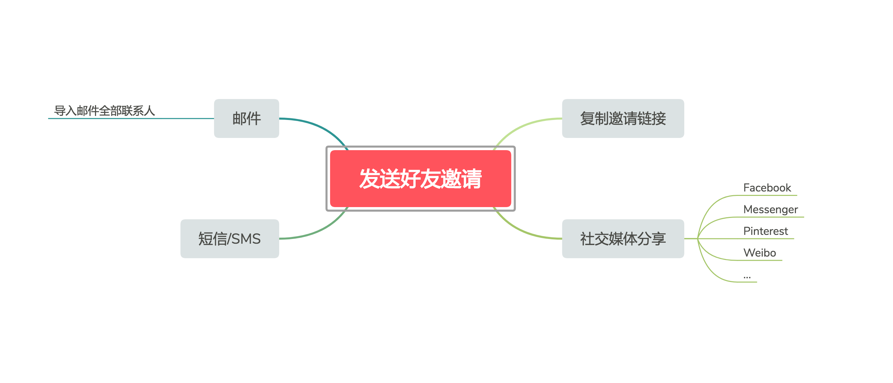
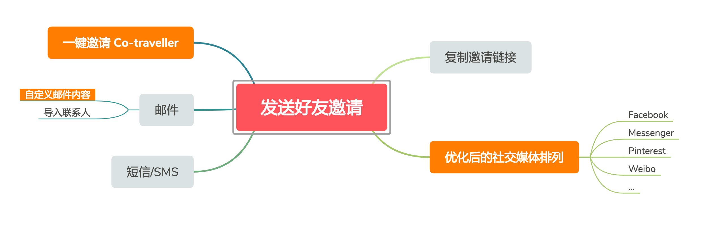

In-flow Referral
Inviting users to recommend Airbnb to more people at certain "satisfying" moments in order to increase the referral numbers and success rate
2017.09 / 4 months

From past user research, we found out the over 90% participants are feeling motivated enough of receiving $75 for referring a new friend to Airbnb, and also willing to do so in their daily life. However, only 10% of them are aware of the referral program. If we look at platforms, website as the main place where most transactions are happening, it has far fewer invitations sent compared to mobile devices.
Our goal was to increase the visibility of referral program and the making the process of sending invitations to get more easier and faster.
The first thing that we did was the entry point audit. It turned out that none of the entry points have a a good traffic to the ~/referral page, being said, people saw those notifications but not willing to take further actions. Once they close the notifications, it wouldn't show up again.

Then we interviewed a group of people and realized that these notifications is not motivated enough, meaning users still need a reason to start inviting friends. Therefore, we aimed at the "satisfying moment" of their experience with Airbnb, e.g. post-booking, post-review, post-wishlist, and post-share. By combining these moments with different scenarios, we hope people could find the reason and feel motivated.
We decided to firstly test post-booking and post-review, as they rank the top two traffic of the entire site. For 2 weeks time and 10% users, we tracked more than 5k clicks, which means that these two entry points works great in terms of motivating users to invite. Then we decided to move forward with enhancing the process and the user experience of sending invitations.
From past user research, we learnt that it would take too much to come to a new page (~/referral) and start a new invitation journey. So we started exploring how to shorten the process and provide a light and fast way to send invitation - complete sending invites in the popup modal.
After that, I started looking at how improve the invitation flow.
1. Analyze all the current sharing channels and prioritize them based off of the frequency.

2. One-click referral - recommend friends that you have travelled with before to help you think about who to invite.

3. Personal note - According to the research, current email messages template looks similar to spam emails. Adding a personal note would make it to be more convincing.

We put all these functionalities together and here is the refined structure of invitation flow.
Modifying entry points and the invitation flow is only one piece of the entire referral program. When we communicated with Customer Experience(CX) team, they told us there is a lot of queries in regards to the post-invite information and actions. So we decided to make the ~/referral page as the central portal which allows users to track their referrals, and seek for more related information.